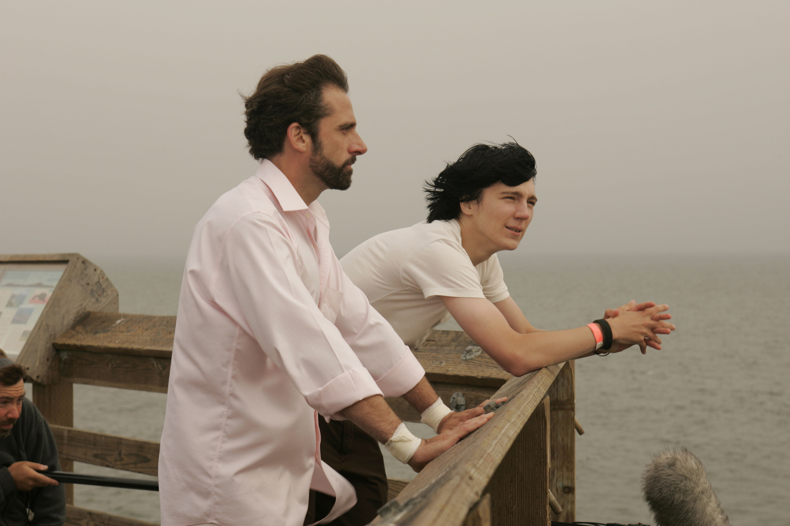

是不是人们总是会变得越来越疲惫？
疲惫，这个词对于我当前的状态是如此的精准，准到我都不想面对它；每当我看到它，或者甚至是想到这个词，我都有种想要轻轻摇一下头的冲动。
疲惫是一个很奇特的状态，我觉得‘疲惫’和‘累’是不同的；累更倾向于描述一种物质上的状态，而疲惫则更像是某种属性。或者说累可以在短时间之内消除，但是疲惫仿佛一眼望不到边的泥沼。你懂的。
2021年，我做了两个错误的决定，恰就是这两个错误让现在的我陷在这一潭臭烘烘的泥沼之中……
回忆起四五月份的时候，好像天天都阳光正好，我觉得我那个时候每天心情应该都挺美的；考上研有些得意，工作也是喜欢的（当时还在Z家），虽然没多少钱，但主要原因是每个月还房贷，也算是幸福的负担了。
下半年发生的一些事让我认识到人生的局限性，认识到人的局限性；认识到我们总是要舍弃一些东西才能真正迈开步子向前走。而且更重要的是，让我意识到希望和失望只是一件事的两个方面，没有孰好孰坏一说。
在经历过那么多的希望和失望之后，我感觉自己终于算是踏上了‘宠辱不惊’的初级台阶，或者换句话说，算是被社会磨平了一些:)
这个世界就是这样，如果你感觉你现在的生活充满光芒；如果你有一种以后的生活会变得特别特别好的自信，也不知道这种自信到底是哪里来的，那么接下来一准儿会当头挨一大棒子……
十月中旬的时候惠姐离职了，也代表着2021年末的一地鸡毛正式拉开了序幕。
惠姐说在这里工作总感觉有些压抑，她不喜欢这个状态，准备跑去小姜那里也许能开心一些。我刚开始听到这说法就有点懵，也不知道该说什么劝劝她，后来我发现她去意已决，也就不再尝试要劝她留下了，后来十月中旬的时候惠姐走了，还真就跑到大坡上面的三丰大厦去找小姜当同事去了，而且工资也涨了不少。
惠姐走了之后，留我一个人面对人脸的工作，说实话十分够用，毕竟我们用了一年多的时间搭建起了这一套平台，它还稳定运行了好久；所以到那个时候也就只剩下维护的工作了，清洗一下数据啦，组织一下训练啦blahblahblah…有的时候回忆起当时的工作状态还真挺怀念的，为了人脸的解决方案我们还真是干得有声有色热火朝天，我跟惠姐说，她也是这么想的。也的确是在Z家的日子让我真正感受到研发工作的快乐。
“教练，我想做研发！”
惠姐走后，我就天天等着涨工资。当然后来证明我可能有点天真了，不过不管怎么样，我可以明目张胆地将‘组长’的名头扣在自己脑袋上了。我每天在Z家几乎是无所事事，我也不想处理那些数据，因为从一开始就没有好好整理，后来随着反馈回来的数据越来越多就越来越乱套了，看着就烦得很，根本没心情整理，索性一直堆在那里。所以也就看看论文，整理一下思路，周会就东拉西扯不讲正经东西，我发现我还蛮擅长～
当时有个同事叫LX，惠姐说有一本西瓜书被他偷回家了，人品可见一斑……而且这人水平说实话不咋地，从北京huawei回来的，却连张量的维度都搞不明白；还特别能讲屁话，基本每次开周会都要介绍别人的开源项目或者介绍论文，怎么介绍呢？就照着人家写的简介念，我都不知道这种人是怎么通过面试的，想当年面试我的时候好歹还问了交叉熵和CycleGAN结构细节。这家伙一开组会就疯狂露怯，你都没办法问他问题，倒不是要审判他，就是比如他说他看了一篇什么方向的文章，解决什么问题，用的什么方法效果怎么样等等等等，那你听完肯定是要谈一谈感想或者说一说没听明白没想明白的地方对吧。但是不行，不，你不能说你哪个地方不懂，因为他哪哪都不懂，他的水平就是他看了论文比我们没看的还不懂，神不神奇啊我靠。
然后他来不久之后惠姐说想要尝试一下GroupFace这个算法（其实就是加了个显式注意力引导），然后因为什么我忘了，反正最后就决定让他来实现用这个算法训练一版模型。结果呢，这个人墨迹了几天，然后找惠姐要代码，然后惠姐没给，他就生气了……
要我说这是真的离谱。
所以其实惠姐离职也有这个人的一份功劳。
后来惠姐休了几天婚假，和她对象去了新开不久的北京环球影视公园，然后回来就离职了。我还记得那天是周一，她中午不知道去哪了，下午四五点给我发微信让我把她的袋子拿下楼，我就提着袋子去等电梯，结果电梯门一开她上来了哈哈，然后我们又等电梯一起下去。
大概从这个时候开始，也就是惠姐刚离职，我便也有一点抑制不住自己离职的想法。倒不是说单纯因为惠姐走了所以我想离开，最根本的原因是失去了以前的研发氛围，也就失去了在Z家的热情:(
但是真正开始看工作还是一个猎头推荐毕马威数字中心的工作，在大连刚组建的分公司。后来当然没去成，不过借着这个更新简历的机会我就疯狂的看新职位，那段时间有挺多人联系我的，职位也多，大公司小公司都有，我也面试了好几个。
那段时间的面试挺让人生气的，主要原因是面试对方基本上都很不专业，在深度学习的任何领域都没有比较深的研究，所以问的问题有一些的确有点搞笑了。说实话这种面试感受让我挺受伤的，无法从外界得到正向的反馈，就陷入好像没有止境的自我怀疑中。
我记得有一天心情实在差到极点，下班之后买了瓶酒，回家打开电脑，挑了一部口碑极好但是一直没看的电影——《阳光小美女》，谢天谢地，哭得稀里哗啦的，十分痛快。
那部电影有一段十分有名的台词：
-"You know Marcel Proust?"
-"He's the guy you teach."
-"Yeah, French writer.
A TOTAL loser.
Never had a real job.
Unrequired love affairs.
Gay.
Spent twenty years writing a book almost no one reads.
But he's also probably the greatest writer since Shakespeare...
Anyway, he, eh, gets down the end of his life, he looks back and decides that all those years he suffers, those are the best years of his life, cause they made him who he was. All the years he was happy, you know, total waste, didn't learn a thing.
So if you sleep until you're 18? Ah! Thinking of the suffering you gonna miss. I mean, high school? High school those are your prime suffering years. You don't get better suffering than that."

说到底这是个关于苦难的看法，马赛尔·普鲁斯特认为苦难是他人生的重要组成部分，他说当他回望自己一生的时候，最好的时光是那些受苦的时光，因为正是这些难过的日子塑造了他。
我还挺同意这个观点的。
回忆起过去几年，尤其是2017-2018年，oh they suffer, they suffer A LOT. 也许在事情略有好转的时候我曾天真地幻想过以后会一帆风顺，不再有坎坷和挫折。
很显然这并不现实。
但是在经历了那些令人痛苦不堪的时光之后，我的生活的确变好了一些。而且我对人生也有了更深入的理解，和马克思主义哲学说的一样，螺旋上升，循环往复。
其实我挺想把那段时间的故事写下来或者讲出来，但是话到嘴边就是说不出来。我其实心里很清楚，是因为那段时间对我的影响太大，大到我的潜意识抗拒回忆的程度。每当我想要回忆在市图书馆度过的时光，就会有一股强大的力量让我思维转向。也许我的潜意识是为了我好吧，那些日子的确……一言难尽。
不过至少对于我来说，痛苦的时光更让我记忆深刻。比如19年末的实习，比如20年的离职，还比如前一段时间的自我怀疑以及现在对新工作的失望和抗拒。
前面讲到面试了一些公司，经历了一些不靠谱，最后拿到了pactera的offer，算法工程师，职级B8，不高不低。我满以为去了会是在一个算法团队中负责人脸或者至少图像的工作，但是没想到，图像只有我一个人，而且我甚至没有一张显卡可用。而且更过分的是，现在让我去支援其他项目(what is ETL?)，根本不做算法的工作。
惠姐听了说这算是欺骗行为，但是正值年底，各家都不怎么招人了，让我先稳到年后再说。
我想也只能这样了吧。
期间还遇到一个特别傻的事，其实是我特别傻，傻到离谱。之前投了长城数字化中心的算法岗，结果对面一直没反馈，我以为没戏了。但是就在我入职pactera不久，对面给我打电话要面试，但是我也不知道自己脑子出了什么大问题哦，我给拒绝了:)
我真的服了自己了……
于是在2022年初，我每天坐在自己的工位上，祈祷不要让我开会不要给我分配工作不要让我写那些傻逼代码……
这工作上的破事，已经够闹心的了吧。不还不够，大连理工的研究生还有一堆破事，我……
唉，一言难尽……
不过讲正经的，这非全我是读不下去了，我主要舍不得我的四万块钱，这他妈的算是打了水漂了……
所以总的来说就是这样，工作上我肯定要换的，年后一定看新机会，一定争取四月份之前换工作。研究生那边，心态放平吧，能上就上，上不了拉鸡巴倒hhh
还有20天就要过年了，今年春节大连不让放炮了，过年终于彻底成为了儿时的回忆。每年春节我都特怀念小时候在奶奶家过大年三十，午夜时候窗外震耳欲聋的炮声，坐在屋子里讲话都听不清，往外面一看，天都是亮的，四面八方到处是各种颜色的礼花，真的太令人怀念了……
以前我总觉得（其实包括现在也是）我的生活永远尚未到来，可是不知道从什么时候开始我发现我错得离谱，人不应该生活在未来，不要想着以后会更好，然后一直期待明天。明天不会更好，或者应该说，明天和今天一样好。我现在明白这个道理，可我还是不由自主地忽略当前的感受，忽略自己和别人的感受，我还是不由自主地麻痹自己，让自己陷入对未来的盲目狂热之中。
你不能总是用‘以后会变好’来唬弄自己，因为这种心态背后的事实是：现在不好，但是又不真正解决现在的问题，而是用和未来绑定在一起的虚幻假象来转移我们本应停留在当下的注意力。
很狡猾，十分狡猾……一不小心，时光就溜走了，它让我损失了我人生最宝贵的东西……
我充分理解，这是一个问题，这是一个大问题。但是我并不知道该怎么解决，我该怎么让自己把全部注意力集中在当下呢？我不知道，我总是为了未来而焦虑，这让我倍感疲惫……
人们都是这样，道理懂很多，可就是做不到。
去年我想着，要挤出来时间精力把找对象这件事办完。但是现在看来我还是太懒了，有时候会安慰自己（找借口罢了）说是因为没有遇到合适的人，但就算是这样，其根本原因也还是我太懒了以至于没有机会遇到合适的人……或者我早就遇到过了呢？
平心而论，到我这个年纪，绝大多数人不再渴望爱情，并且大家都能平静地接受‘我可能至死也无法遇到真爱’这个事实。没有经历过那种情感多多少少是有些遗憾的，不过事已至此，遗憾就遗憾吧，希望今年能……
算了我不希望了，大家总是希望这个希望那个的，好像希望一下子就算是完成任务了，可实际上也只不过是说说而已。而且，这种‘希望’的说法更像是将任务暂时挂起，表示我知道了以后再说吧！
好的，我知道了，那就以后再说吧！